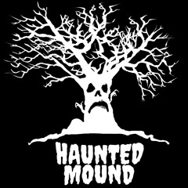

Haunted Mound
Haunted mound is a musical collective made by artists Sematary and Ghost mountain. Music made by the haunted mound is a mix of witch house, trap and drill music. Staring in 2019, the group is getting more and more popular and while a lot of people considered them 'underground', it wont be long until they become one of the big names in the rap scene.
Upcoming tour dates
No upcoming tours yet! stay tuned.....